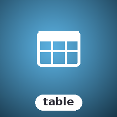

SugarTable
Customizable keyboard-driven data table with sorting, pagination, and a programmatic row cursor

Column-definition table with sortable columns, frozen columns, per-cell styling, pagination, and a programmatic row cursor. Per-cell styling rides a restricted SGR attribute set canonicalised to 24-bit at render.
Install
composer require sugarcraft/sugar-tableQuickstart
use SugarCraft\Table\{Table, Column, Row, RowData, ColumnWidth, WrapMode};
$table = Table::fromColumns([
Column::new('name', 'Name', 20)->withAlignLeft()
->withColumnWidth(ColumnWidth::Dynamic, 0),
Column::new('role', 'Role', 15)->withColumnWidth(ColumnWidth::Percent, 25.0),
Column::new('age', 'Age', 5)->withWrapMode(WrapMode::None),
])
->withRows([
Row::new(RowData::from(['name' => 'Alice', 'role' => 'Admin', 'age' => '30'])),
Row::new(RowData::from(['name' => 'Bob', 'role' => 'Dev', 'age' => '28'])),
])
->withPageSize(25);
echo $table->View();What's in the box
Accessors
Property reads are bare: public readonly state ($column->style, $row->data, $cell->value) or bare methods (Table::Columns(), Table::CurrentRow(), Table::scrollY()). No getFoo()-form accessor ships in this lib — under the get*-era ruling (2026-10-24) there was nothing here to deprecate; RowData::get()/::has() and Table::isExpanded() stay ruled as keyed lookups and predicates, pinned by tests/BareAccessorEraTest.php.
Security & untrusted content
Every cell value, column title and expanded-detail line passes through Sanitize::value() before reaching the buffer: C0/DEL bytes become ·, C1 is replaced, invalid UTF-8 repairs to U+FFFD (raw ANSI in a value paints as visible junk, never honored), sugar-mouse zone sentinels U+E000/U+E001 are stripped so forged click targets cannot ride untrusted data, and bidi overrides / zero-width space render as visible <U+XXXX> markers. Style channels are parse-restricted (SGR strings are parsed into a structured attribute set, canonicalised to 24-bit at render). Casting a StyledCell to string is the one deliberate bypass — it emits its raw value unsanitized; render untrusted content only through View(). See docs/TRUST-BOUNDARY.md.
Accessibility
Selection is pure reverse video (ESC[0;7m) — colour-independent — and zebra striping is a fixed black-on-white inversion; both stay readable on any palette, and withSelectable(false) drops the highlight entirely. The empty-state message is translatable. There is no NO_COLOR, non-TTY or plain-text degrade path (SGR is always emitted); for assistive tech prefer Border::ascii() or Border::hidden() with withHeaderStyle(''), since box glyphs and the default TrueColor header add noise and light-theme contrast risk, and no semantic header/column association exists beyond visual alignment.
Source & demos
- Source on GitHub
- Full README
- Runnable examples
- Originally inspired by Evertras/bubble-table (Go); SugarCraft is developed as a native PHP project.
API
| Class | Method | Description |
|---|---|---|
| Table | static fromColumns(columns) / withColumns(columns) | Create a table from its columns / replace them |
| Table | withRows(rows) | Set table rows |
| Table | addRow(row) / addRows(rows) | Append one row / a batch |
| Table | withBaseStyle(style) / withHeaderStyle(style) | Base cell SGR / header-row SGR (default '1;37') |
| Table | withShowHeader(bool) / withShowFooter(bool) | Toggle the header row / footer row |
| Table | withZebra(bool) | Table-level alternating-row stripe |
| Table | withStyleFunc(callable) | Per-cell style callback (row, col, value) → CellBuffer\Style|string |
| Table | withMissingIndicator(text) | Placeholder for cells whose row has no entry (default '-') |
| Table | withPageSize(size) | Set rows per page for pagination |
| Table | withPage(n) | Jump to page n (0-based; PageFooter shows n+1) |
| Table | SelectPage(n) / NextPage() / PreviousPage() | Page navigation (clamped to valid pages; cursor snaps to the page) |
| Table | withFooterType(FooterType) / RowsFooter() | Choose footer content (Page|Rows|Both) / read the rows-count footer string |
| Table | withViewportHeight(n) | Render only n visible rows (viewport virtualization) |
| Table | withScrollY(n) | Set vertical scroll offset (row number) |
| Table | scrollY() | Get current scroll offset |
| Table | View() | Render the table to string — every value passes the Sanitize::value() ingress (see Security & untrusted content) |
| Table | SortBy(colKey, ascending, primary) | Sort rows by a column — numeric-aware when both values are numeric, case-insensitive otherwise; repeating the sole active sort key with the same direction toggles it |
| Table | ClearSort() | Remove all sorting |
| Table | Filter(key, text) / ClearFilter(key) / ClearAllFilters() | Per-column substring filter (filterable-marked columns only once any is marked) |
| Table | search(text) / ClearSearch() | OR search across the scanned columns |
| Table | handleKey(KEY_*) | Keyboard scrolling - KEY_ARROW_UP/DOWN, PAGE_UP/DOWN, HOME, END; clamps to maxScrollY() |
| Table | SelectNext() / SelectPrevious() | Move the row cursor (follows the viewport) |
| Table | maxScrollY() | Highest valid scrollY for the current page + viewport (public, page-aware) |
| Table | withFrozenCols(indices) | Pin a contiguous prefix [0..k]; anything else throws |
| Table | withHiddenCols(indices) / withScrollX(cols) | Hide columns (must stay disjoint from the frozen prefix) / pan the scrollable region |
| Table | withExpandedRows(i) / toggleExpanded(i) / isExpanded(i) | Row detail expansion tracked by Row object identity (withRows() prunes stale identities) |
| Table | computeColumnWidths(total) | Compute actual widths from ColumnWidth enum values |
| Table | withBorder(border) | Set border family (Border::normal/rounded/thick/double/block/ascii/hidden/markdownBorder) |
| Table | withBorderStyle(ansiStyle) | Apply ANSI SGR style to default border |
| Table | withMultilineMode(bool) | Enable multi-line rows (expands to max cell height) |
| Column | new(key, title, width) | Create a column |
| Column | withAlignLeft(bool) | Left-align (default is right) |
| Column | withColumnWidth(mode, value) | Set ColumnWidth::Fixed|Percent|Dynamic|Content|Flex |
| Column | withWrapMode(mode) | Set WrapMode::None|WordWrap|Character |
| Row | new(rowData) | Create a row from RowData |
| RowData | from(array) | Create from key-value array |
| RowData | get(key) / has(key) / all() / with(key, value) | Keyed map lookup, presence test, full map, immutable set (ruling-3b keepers — not getFoo()-form accessors) |
| StyledCell | new(value, style) | Create styled cell with ANSI style; casting to string bypasses sanitization — render via Table::View() |
| ColumnWidth | enum | Fixed | Percent | Dynamic | Content | Flex |
| WrapMode | enum | None | WordWrap | Character |
| FooterType | enum | Page | Rows | Both (footer renders only when pagination is active) |